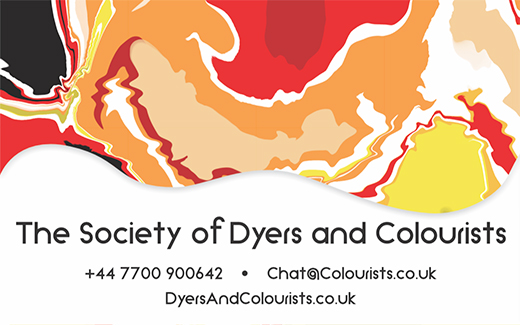
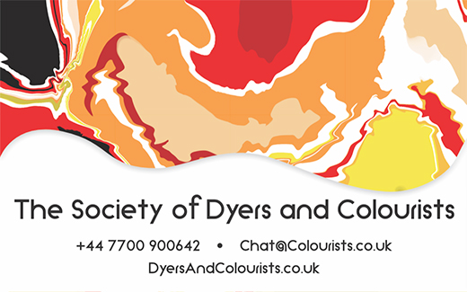

A full stationary set for The Society Of Colours And Dyers

the insight for the patterns and colours of the design to create unique patterns for the designs.
A type of ink that reacts to heat, allowing colour to shine through from under the black coating.

With a focus on colours, it wouldn't be right to not look at how other colours might look.
 
